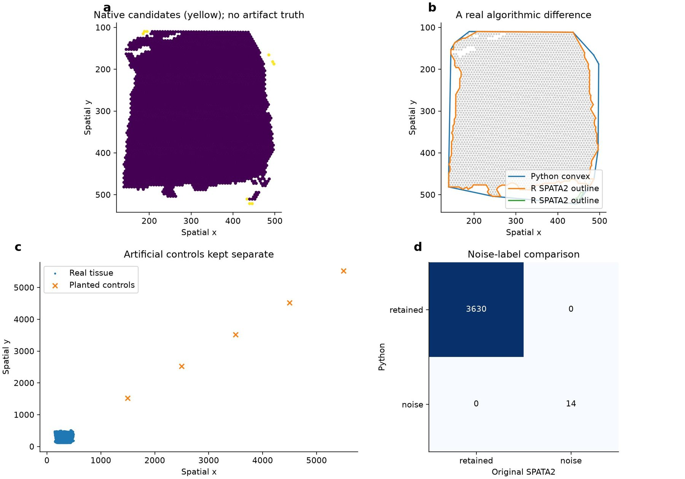
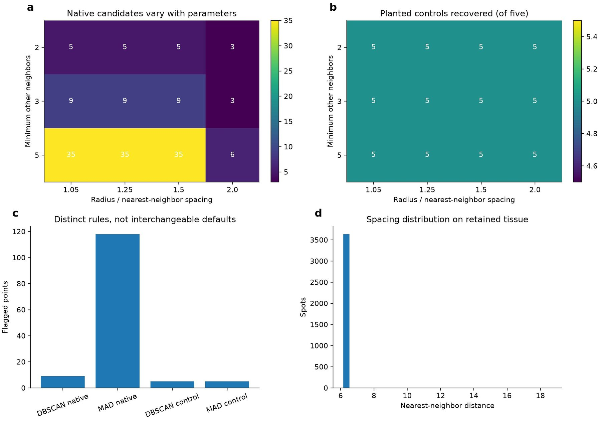
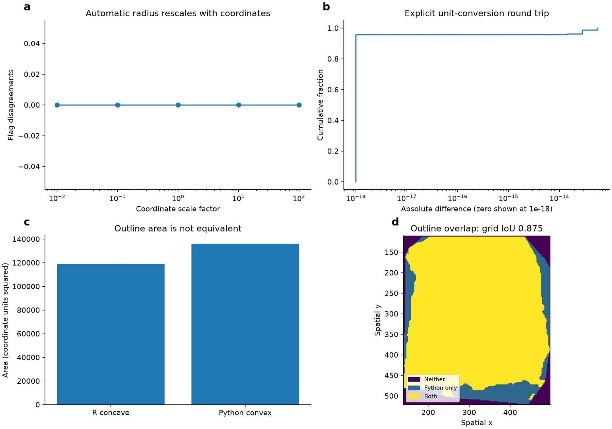

Scoped spatial outlier validation for SPATA2-inspired AnnData utilities
Affiliations
- 1 School of the First Clinical Medical Sciences, Wenzhou Medical University, Wenzhou 325000, China
- 2 Department of Genetics, Stanford University, Stanford, CA 94305, USA
- 3 OmicVerse, Inc., San Francisco, CA 94114, USA
OmicVerse Technical Reports (2026)Cite this article
Download PDFAbstract
We assess selected SPATA2-inspired AnnData utilities using original SPATA2 3.1.4 on 3,639 real retained DLPFC coordinates and five planted controls. Density labels agree under matched parameters, but the Python convex outline has about 14.3 percent greater area than the original R outline and grid overlap is approximately 0.875. Parameter sensitivity and unit-scale checks distinguish numerical invariants from algorithmic differences. The report does not claim reconstruction of SPATA2 spatial gradients, histology analysis or its full object framework.
- Python
- R
- reproducibility
- validation
Introduction
Spatial analysis combines expression values with coordinates, tissue geometry and annotations. SPATA2 is a broad R framework covering many of these operations, including histology-associated expression gradients1. A small collection of Python coordinate helpers is therefore not a complete replacement for SPATA2. This report deliberately evaluates a narrower surface: AnnData coordinate and variable access, a convex tissue outline, spatial candidate-outlier flags and explicit unit conversion.
The purpose of spata2py is to make these limited operations convenient in Python and to keep their semantics understandable. The distinction between geometry routines matters. Density connectivity can retain a point at the tissue rim through its neighbors, while a distance-threshold rule can flag the same point. Likewise, a single convex hull can enclose gaps that a concave or fragmented tissue boundary excludes. Matching one operation cannot establish equivalence of the others.
We extend the earlier R dbscan comparison by executing SPATA2 3.1.4 itself on the shared real coordinates. The study compares its tissue-section/noise labels and outline with the Python results, examines neighborhood sensitivity and checks behavior under coordinate rescaling. The results support density-label agreement under a fixed parameterization while explicitly demonstrating a boundary-shape difference. They do not claim spatial-gradient, annotation or image-analysis reconstruction.
Implementation and scope
AnnData access and geometry
Coordinates are read from obsm['spatial'] or designated observation columns. Variable extraction joins expression or metadata to the coordinate table by observation identifiers. These accessors are useful infrastructure, but their names do not establish an S4-object mapping or behavioral parity for every R method. The historical count of matching exported names should be interpreted as an interface inventory, not a percentage of scientific equivalence.
The Python tissue outline deduplicates coordinates and computes one convex hull with SciPy2. Degenerate coordinate sets have an ordered-point fallback. No histological image, concavity parameter or tissue-fragment model is inferred. A convex hull is well defined and inexpensive, but can span cavities and disconnected regions. The R SPATA2 observation-based outline includes density clustering and a concave boundary construction, making it a different algorithm even when both are drawn around the same coordinates.
Candidate-outlier rules
DBSCAN is now the default Python rule, synchronized with the OmicVerse implementation. If no radius is supplied, epsilon is 1.25 times the median nearest-neighbor distance. A minimum of three other neighbors corresponds to scikit-learn's self-inclusive min_samples=4. Points assigned to density-connected clusters are retained and noise points are flagged. The labels describe local geometry, not proven biological artifacts. Removing them requires consideration of tissue architecture and sampling design.
The older method='mad' option uses a robust threshold on kth-neighbor distances. Its median absolute deviation now has a relative numerical guard. On a regular array, theoretically identical distances can differ at floating-point precision; checking for exactly zero spread can then yield a threshold that treats rounding as isolation. The guard fixes that numerical issue, but does not make the distance-based rule equivalent to DBSCAN or guarantee sensitivity to isolated controls. Both algorithms remain exposed with their differences documented.
Unit conversions require an explicit pixels-per-unit factor. The code does not infer physical calibration from arbitrary coordinate magnitudes. Uniform rescaling should preserve automatically normalized density decisions when the inferred radius scales with the coordinates, but cannot preserve results if a user supplies a fixed numerical radius without updating its unit.
Real-data and control design
The experiment uses 3,639 retained coordinates from DLPFC section 151673, a real cortical spatial-expression dataset3. These are the coordinates available in the local exported analysis, not every raw spot on the original slide. Five isolated points are planted far outside the coordinate range as positive controls. They are artificial and displayed separately from the tissue. There is no independently adjudicated artifact label for the native spots, so their flags are called candidates rather than false or true positives.
Original SPATA2 3.1.4 is initialized with these coordinates and run through identifyTissueOutline(method='obs'), with epsilon 7.707226277274469, minPts=4 and concavity 2. The SPATA2 container requires an expression assay; a two-row constant placeholder matrix is used only to satisfy that container interface. The geometry method evaluated here does not infer expression biology from that placeholder. This distinction is recorded so that a geometry comparison cannot be mistaken for a real-expression SPATA2 analysis.
We export original-R tissue labels, coordinate tables and outline vertices. Python receives exactly the same coordinates. The native-coordinate convex hull is compared with the R tissue outline after excluding the five distant planted controls from the Python hull; otherwise a deliberately artificial point would dominate the boundary. A separate grid-based overlap calculation samples 200 by 200 positions over the native coordinate extent. It is an approximation at a declared resolution, not exact polygon intersection arithmetic.

Results
Density labels agree; tissue outlines do not
Original SPATA2 and Python returned identical noise labels: nine native candidates and all five planted controls were flagged, with zero label disagreements. The remaining points formed one non-noise tissue section in the R result. This strengthens the earlier kernel-only comparison because the original package method was executed, but the conclusion still concerns the specified geometry method and parameters, not all SPATA2 functionality.
The native R outline area was approximately 119,076.6 squared coordinate units, whereas the Python convex hull area was 136,128.8, about 14.3% larger. The estimated intersection-over-union on the 200-by-200 grid was 0.8746. These quantities demonstrate a meaningful algorithmic difference, not a small floating-point error. The concave boundary and convex hull should not be treated as interchangeable inputs to area-normalized abundance or distance-to-boundary analyses.
| Measurement | Result | Scope |
|---|---|---|
| Real / planted coordinates | 3,639 / 5 | Retained DLPFC subset plus artificial controls |
| Native / planted noise flags | 9 / 5 | Original SPATA2 and Python agree |
| Label disagreements | 0 | Identical radius and minimum-point settings |
| Original R outline area | 119,076.6 | Coordinate units squared |
| Python convex area | 136,128.8 | Native coordinates, planted controls excluded |
| Estimated outline IoU | 0.8746 | 200 by 200 sampling grid |
Neighborhood sensitivity
The radius was varied from 1.05 to 2 times the median nearest-neighbor spacing, and the minimum number of other neighbors from two to five. All five planted controls were recovered in every tested condition. Native candidate counts, however, ranged from three to 35. At radius factors 1.05–1.5, increasing the minimum-neighbor requirement changed native counts from five to nine to 35. At factor 2, the corresponding counts were three, three and six.
These changes are expected consequences of the density definition, not instability in floating-point arithmetic. A single parameter choice cannot establish a biological truth label for a boundary point. A useful workflow should inspect flagged locations and the sampling pattern, retain parameters in provenance and avoid automatically deleting points merely because the detector returned a flag.

Scale and unit checks
Multiplying all coordinates by 0.01, 0.1, 1, 10 or 100 produced no flag disagreements with the baseline automatic-radius result. This checks the intended behavior when epsilon is recomputed from the rescaled geometry. It does not validate arbitrary transformations such as anisotropic scaling or rotation with coordinate-dependent downstream features. Pixel-to-unit conversion followed by its inverse had maximum absolute round-trip error 5.68e-14 on the tested coordinates.
The scale checks and boundary metrics answer different questions. Numerical invariance under uniform rescaling cannot rescue an incorrect outline model; conversely, a real convex-versus-concave difference is not evidence that the unit conversion is broken. Keeping those outcomes separate helps users choose a helper appropriate to the operation they need.

Limitations and appropriate claims
One retained tissue section does not cover all spatial platforms or disconnected tissue geometries. The five far-away controls are easy geometric positives; their recovery does not measure specificity on real artifacts or sensitivity near the tissue edge. Further datasets, fragmented sections and expert-reviewed candidate labels would be needed to assess outlier removal as a biological preprocessing decision.
The current implementation does not reconstruct SPATA2 spatial gradients, trajectory statistics, image segmentation, annotations or its general S4 framework. Its convex outline remains intentionally different. Consequently the report and package should be described as selected SPATA2-inspired AnnData utilities, with demonstrated label agreement for a bounded case and measured differences elsewhere. This report makes no speed claim and no global package-equivalence claim.
Data and code availability
The reproduction bundle contains the recorded inputs, reference outputs, scripts and environment details.
The evaluated Python implementation is preserved at the pinned repair revision. The benchmark source hashes identify the exact tested files; inclusion in an upstream release is a separate status.
Original package documentation and source are available at https://themilolab.github.io/SPATA2/ and https://github.com/theMILOlab/SPATA2. Python source is at https://github.com/omicverse/py-SPATA2. The experiment bundle includes the R geometry invocation, exported original labels/vertices, spata_sensitivity.csv, outline metrics, session information and the figure script. The serialized R object is retained for inspection. Dataset provenance and hashes accompany the earlier shared-coordinate fixture. The reproduction materials accompany this scoped technical report.
Conflicts of interest
H.Z. and Z.Z. are affiliated with OmicVerse, Inc.
Use of AI tools
AI assistance was used for code inspection, experiment scripting, visualization and drafting. The authors approved submission of this scoped technical report.
References
- 1.Kueckelhaus J et al. (2024). Inferring histology-associated gene expression gradients in spatial transcriptomic studies. Nature Communications 15, 7280. 10.1038/s41467-024-50904-x
- 2.Virtanen P et al. (2020). SciPy 1.0: fundamental algorithms for scientific computing in Python. Nature Methods 17, 261–272. 10.1038/s41592-019-0686-2
- 3.Maynard KR et al. (2021). Transcriptome-scale spatial gene expression in the human dorsolateral prefrontal cortex. Nature Neuroscience 24, 425–436. 10.1038/s41593-020-00787-0
- 4.Pedregosa F et al. (2011). Scikit-learn: Machine Learning in Python. Journal of Machine Learning Research 12, 2825–2830. https://jmlr.org/papers/v12/pedregosa11a.html
Supplementary information
Reproduction details
The R run uses the original package method with an explicitly specified radius and minimum-point count. Export tissue labels from metadata rather than assuming that every coordinate table contains the newly added field. For Python, preserve the distinction between the self-inclusive DBSCAN count and the number of other neighbors. Compare labels in input identifier order and account for the five appended controls.
Compute area from ordered vertices using the shoelace formula. For grid overlap, form the same coordinate extent for both polygons, evaluate membership for all grid points and calculate intersection divided by union. The 200-by-200 resolution is recorded; a more accurate geometric intersection could alter the final digits. The finding of larger convex area should not be interpreted as a generic fixed percentage across samples.
Author information
Affiliations
- 1 School of the First Clinical Medical Sciences, Wenzhou Medical University, Wenzhou 325000, China
- 2 Department of Genetics, Stanford University, Stanford, CA 94305, USA
- 3 OmicVerse, Inc., San Francisco, CA 94114, USA
Corresponding authors
Correspondence to Zehua Zeng.
Cite this article
Zhu, H. & Zeng, Z. Scoped spatial outlier validation for SPATA2-inspired AnnData utilities. OmicVerse Technical Reports (2026). https://omicverse.org/articles/spata2py
@techreport{zhu2026spata2py,
title = {Scoped spatial outlier validation for SPATA2-inspired AnnData utilities},
author = {Zhu, Haoliang and Zeng, Zehua},
institution = {OmicVerse},
type = {Technical Report},
year = {2026},
url = {https://omicverse.org/articles/spata2py}
}